Executive Summary
Customer churn directly impacts revenue and long-term profitability. This project develops a machine learning-based solution to predict customer churn and enable businesses to work on proactive retention strategies.
Using a dataset of approximately 12,000 customers, multiple classification models were evaluated, including Logistic Regression, Decision Tree, and Random Forest. A Scikit-learn pipeline was implemented to ensure consistent preprocessing and avoid data leakage. The Random Forest model, optimized using GridSearchCV, demonstrated the best performance.
To align with business priorities, the classification threshold was adjusted from 0.5 to 0.3, improving recall and enabling better identification of at-risk customers. Key drivers of churn include contract type, tenure, and payment behaviour.
The results highlight actionable insights that can help businesses reduce churn through targeted interventions such as promoting long-term contracts and improving onboarding experiences.
Introduction
Customer retention is a critical factor for sustainable business growth, particularly in industries with recurring revenue models such as telecommunications and subscription services. Acquiring new customers is often significantly more expensive than retaining existing ones, which makes churn prediction a high-impact business problem.
This analysis aims to predict customer churn using a data-driven approach. The problem is well-suited for machine learning because:
- Large volumes of customer data are available
- Patterns in behaviour can indicate future churn
- Predictive models enable proactive business strategies
By leveraging machine learning, organizations can shift from reactive to predictive decision-making, ultimately improving customer retention and profitability.
Personal Background: I have worked in the e-commerce industry for the last 16-17 years, collaborating with many Fortune 500 retailers and e-commerce companies including Cardinal Health, Home Depot, Hasbro Toyshop, and M&S. I developed numerous utilities to collect data and dashboards that enable businesses to analyze various customer-related information. Customer retention has always been an interesting focus area, as we developed many features to provide the best experience to customers and retain them. I believe this is the most suitable use case for me to work on this problem and leverage it for future customers.
Methods
Data Sources
The dataset is constructed by merging two similar datasets with consistent column structures and value formats:
- Total Records: 12,023
- Total Features: 21
- Feature Types:
- 17 categorical variables (binary, nominal, ordinal)
- 3 numerical variables
- 1 identifier column (customerID)
- Demographic information: e.g., gender, dependents
- Service details: e.g., internet service, contract type
- Billing information: e.g., monthly charges, total charges
| customerID | gender | SeniorCitizen | Partner | Dependents | tenure | PhoneService | MultipleLines | InternetService | OnlineSecurity | OnlineBackup | DeviceProtection | TechSupport | StreamingTV | StreamingMovies | Contract | PaperlessBilling | PaymentMethod | MonthlyCharges | TotalCharges | Churn |
|---|---|---|---|---|---|---|---|---|---|---|---|---|---|---|---|---|---|---|---|---|
| 7590-VHVEG | Female | 0 | Yes | No | 1 | No | No phone service | DSL | No | Yes | No | No | No | No | Month-to-month | Yes | Electronic check | 29.85 | 29.85 | No |
| 5575-GNVDE | Male | 0 | No | No | 34 | Yes | No | DSL | Yes | No | Yes | No | No | No | One year | No | Mailed check | 56.95 | 1889.5 | No |
| 3668-QPYBK | Male | 0 | No | No | 2 | Yes | No | DSL | Yes | Yes | No | No | No | No | Month-to-month | Yes | Mailed check | 53.85 | 108.15 | Yes |
| 7795-CFOCW | Male | 0 | No | No | 45 | No | No phone service | DSL | Yes | No | Yes | Yes | No | No | One year | No | Bank transfer (automatic) | 42.3 | 1840.75 | No |
| 9237-HQITU | Female | 0 | No | No | 2 | Yes | No | Fiber optic | No | No | No | No | No | No | Month-to-month | Yes | Electronic check | 70.7 | 151.65 | Yes |
Target & Metric
The target variable is Churn, a binary indicator (1 = churn, 0 = retained), making this a classification problem. It will indicate whether a customer is churning or not.
Data Cleaning and Preprocessing
Several preprocessing steps were applied:
- Removed customerID (no predictive value, adds noise)
- Converted TotalCharges and MonthlyCharges to numeric format
- Encoded categorical variables:
- Binary variables → Label Encoding (0/1)
- Multi-class variables → One-Hot Encoding
- Applied feature scaling to numerical variables:
- Tenure
- MonthlyCharges
- TotalCharges
To avoid data leakage, the dataset was split into training and testing sets before model training, and preprocessing was applied through a unified pipeline.
Modelling Approach
A Scikit-learn Pipeline was implemented combining:
- ColumnTransformer (for preprocessing)
- Machine learning model (classifier)
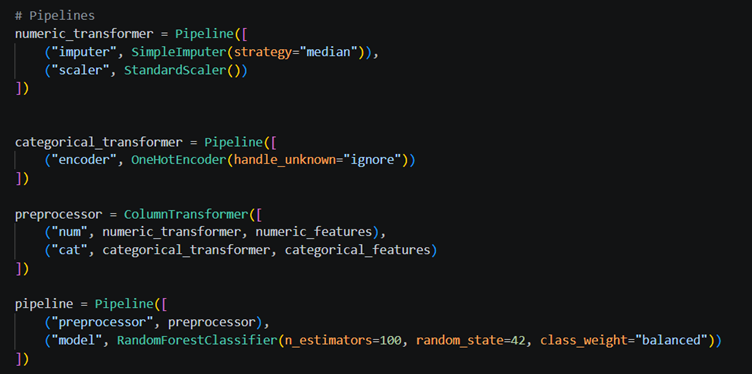
The following models were evaluated:
- Logistic Regression
- Decision Tree
- Random Forest
- Gradient Boosting
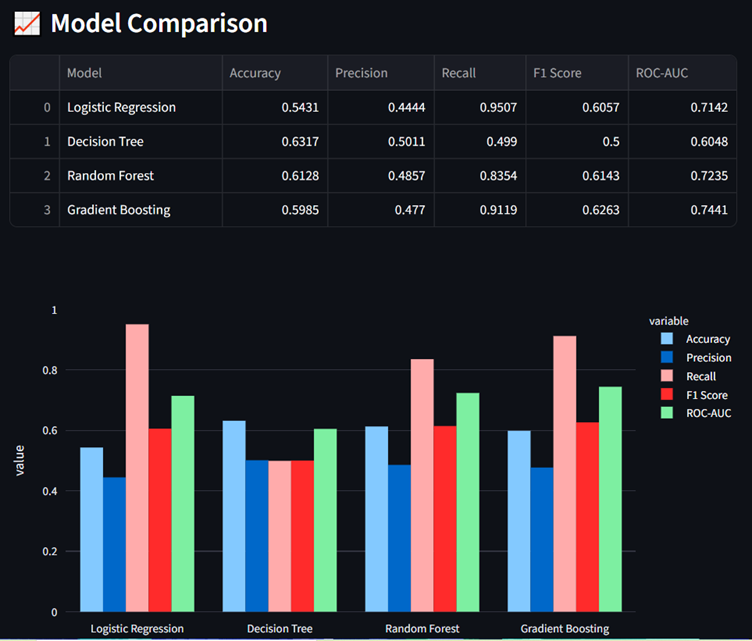
Hyperparameter tuning was performed using GridSearchCV, optimizing parameters such as:
- Number of estimators
- Maximum tree depth
- Minimum samples split
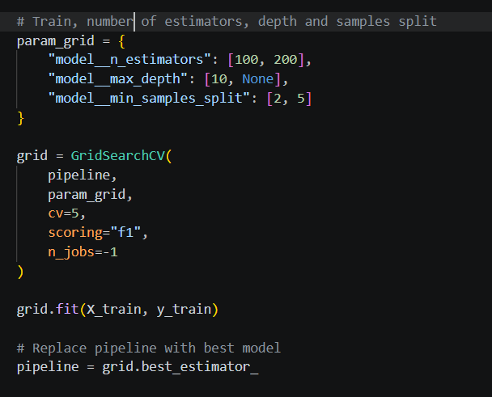
Threshold Optimization
Instead of using the default classification threshold (0.5), a threshold of 0.3 was selected:
- False negatives (missing churners) are more costly than false positives
- Lower threshold improves recall, capturing more at-risk customers
Evaluation Metrics
The following metrics were used:
- Accuracy
- Precision
- Recall
- F1 Score
- ROC-AUC
Recall was prioritized due to its importance in minimizing missed churn cases.
Results
Descriptive Analysis
Exploratory data analysis revealed:
- Approximately 35–37% of customers churned, indicating class imbalance
- Customers with short tenure are more likely to churn
- Month-to-month contracts show significantly higher churn rates
- Customers using electronic check payment methods have higher churn
Model Performance
The Random Forest model achieved strong performance, with improvements observed after hyperparameter tuning.
Key Observations:
- ROC-AUC indicates strong classification capability
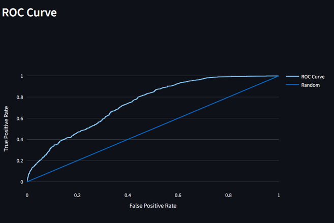
- Confusion matrix shows improved detection of churners
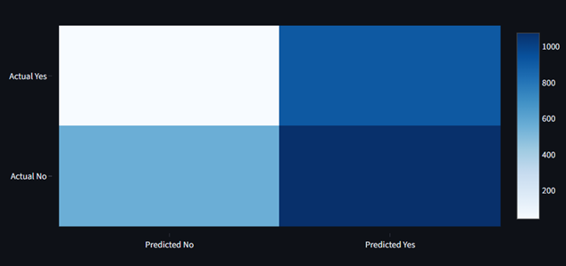
- Lower threshold increases recall at the cost of slight precision reduction
Feature Importance
The most influential features include:
- Contract type
- Tenure
- Monthly charges
These variables play a critical role in determining churn behaviour.
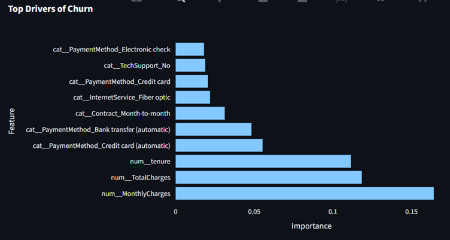
Interpretation of Results
The results suggest that churn is strongly influenced by:
- Customer commitment level (contract type)
- Customer lifecycle stage (tenure)
- Pricing sensitivity (monthly charges)
This indicates that both behavioural and financial factors contribute significantly to churn.
Visual Analysis & Dashboard Integration
Churn Distribution (Class Imbalance)
This pie chart shows approximately 37% of customers have churned, indicating a moderate churn problem. The dataset is imbalanced, with more retained customers than churned ones. Retention strategies should focus on the high-risk minority segment, as even small improvements can significantly impact revenue.
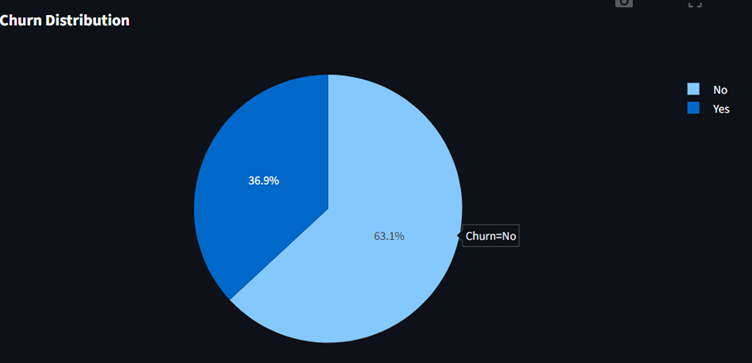
Contract vs Churn Analysis
Month-to-month contracts have the highest churn rate. Long-term contracts (1-year, 2-year) show better retention. From a business perspective, contract type is a strong churn driver. Incentivizing long-term contracts can significantly improve retention.
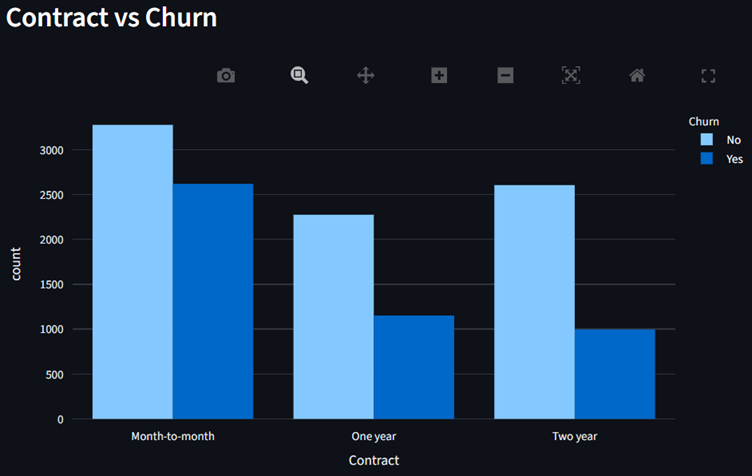
Tenure Distribution by Churn
Customers with low tenure (early lifecycle) churn more frequently. Long-tenure customers are more stable and loyal. The first few months are critical for retention. Onboarding experience and early engagement should be optimized.
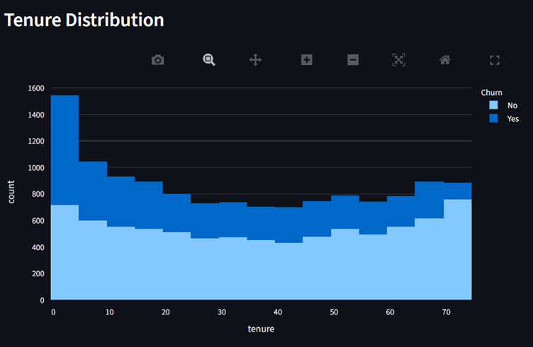
Payment Method Analysis
Customers using Electronic Check show significantly higher churn rates. Automatic payment methods (credit card/bank transfer) have lower churn. Customers not using auto-pay are high-risk segments. Encouraging auto-payment adoption can reduce churn.
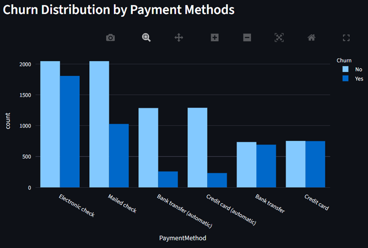
ROC Curve
The curve is well above the diagonal (random line), which means the model has strong predictive power. It shows high recall is achievable with acceptable false positives.
Confusion Matrix
- True Positives (top-right): Correctly identified churners
- False Negatives (top-left): Missed churners (critical)
- False Positives (bottom-right): Safe customers flagged as churn
- True Negatives (bottom-left): Correctly identified safe customers
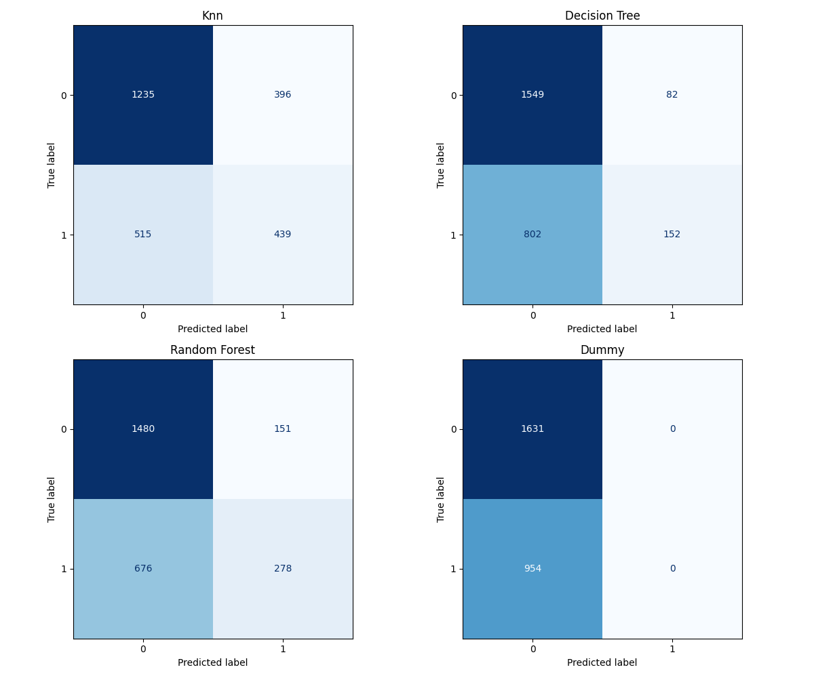
Lift Chart
Top deciles contain customers with highest churn probability. A lift > 1 means the model performs better than random targeting Higher lift in early deciles indicates strong ranking capability. Marketing teams can prioritize retention campaigns efficiently
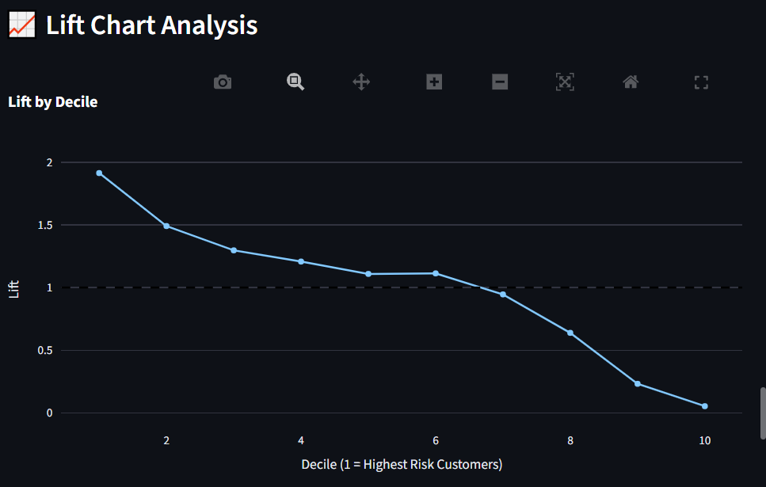
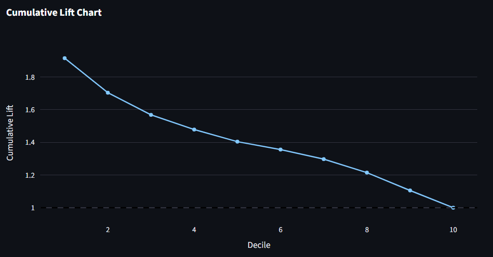
Cost Model
The cost model analysis shows the financial impact of different churn prediction strategies. Understanding these costs helps in making informed decisions about resource allocation and campaign targeting.
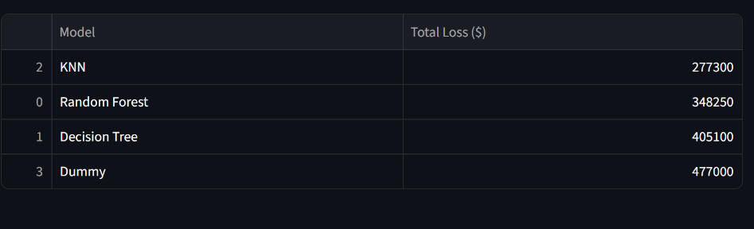
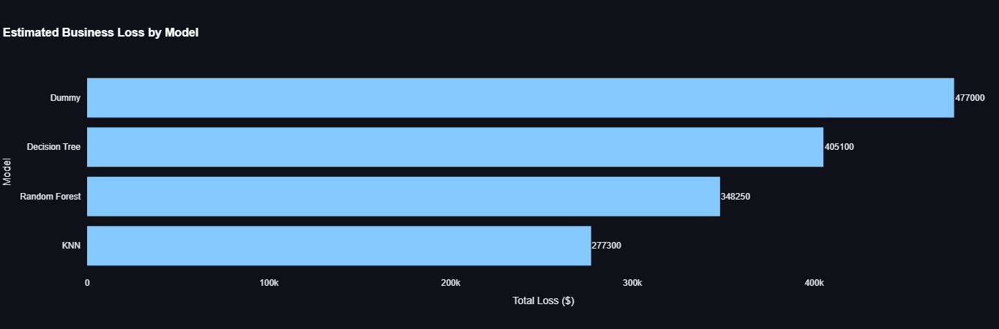
Conclusion
This project demonstrates that machine learning can effectively predict customer churn and provide actionable business insights.
Key Findings:
- Random Forest outperforms simpler models (considering both recall and accuracy)
- Early-stage customers are at highest risk
- Contract type is the strongest predictor of churn
Recommendations
Based on the analysis, the following actions are recommended to reduce customer churn:
Promote Long-Term Contracts
Incentivize customers to switch from month-to-month to long-term contracts (1-year or 2-year) through discounts, loyalty rewards or bundled services. This single measure can significantly reduce churn rates.
Encourage Automatic Payment Methods
Promote the adoption of automatic payment methods (credit card or bank transfer) over electronic check payments. Implement easy setup processes and incentivize auto-pay enrollment.
Improve Onboarding for New Customers
Focus on enhancing the first-time customer experience as early-stage customers show higher churn rates. Implement proactive engagement and support during the critical onboarding period.
Deploy Real-Time Churn Prediction Systems
Integrate the developed model into operational systems to identify at-risk customers in real-time and enable timely intervention and personalized offers and promotions.
Conduct A/B Testing for Retention Strategies
Business can test various retention strategies (e.g. promotional offers, service improvements, campaigns) on identified high-risk segments to identify the most effective interventions.